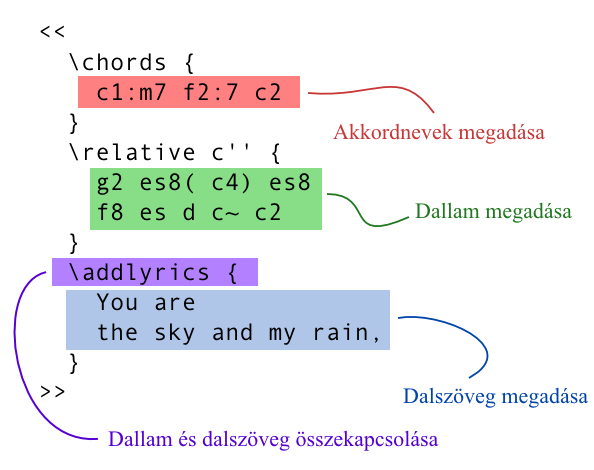
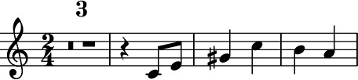
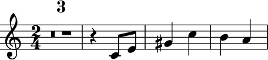
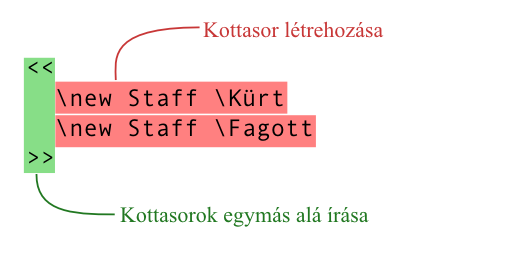

Szöveges bevitel
A LilyPond működése

(Kattints a képre a nagyításhoz)
A LilyPond parancssori program: meg kell adni neki egy szöveges fájlt, ami a zene leírását tartalmazza. Az eredményül kapott kotta képernyőn megtekinthető vagy kinyomtatható.
A kotta beírása nem grafikus felhasználói felületen történik, hanem a zene szöveges formájának begépelésével. Ezt a szöveget aztán „lefordítja” a LilyPond, azaz gyönyörűen szedett kottává alakítja.
A grafikus felületekhez szokott felhasználók részéről ez másfajta gondolkodásmódot igényel, de az eredmény mindenképpen megéri a beléje fektetett munkát!
Figyelem: Itt gyorsan áttekintjük a szöveges bevitel alapjait – ez messze nem olyan bonyolult, mint amilyennek hangzik! Nem baj, ha nem érted az alábbi példák minden egyes részletét; a tankönyv mindent részletesen, fokozatosan haladva elmagyaráz.
Egyszerű, mint az ABC
A hangok betűkkel és számokkal írhatók le. A speciális parancsok a \ karakterrel kezdődnek.


Módosított hangokat a hangnevek módosításával lehet elérni: a keresztes hang neve után -is, a bés hang neve után -es írandó. (Más nyelveknek megfelelő jelölések is alkalmazhatóak.) A LilyPond kitalálja, hova rakjon módosítójelet.


Popzene
Könnyen írhatsz dalszöveget és akkordokat a dallam mellé:

Zenekari művek
A bemeneti fájl a mű összes hangját tartalmazza. A partitúra és a szólamkották egyetlen forrásból származnak. Így a változások mind a partitúrában, mind az egyes szólamokban tükröződnek. A szólamok hangjainak újrafelhasználásához el kell nevezni őket:

Az így létrejött változóra később lehet hivatkozni (akár transzponálva és összevonva a többütemes szüneteket, mint itt):
 

Ugyanazt a változót használhatjuk a partitúrában (ez alkalommal hangzó magasságban):

Tankönyv
Tisztában vagyunk vele, hogy sok felhasználónak szokatlan lehet a szöveges bevitel. Ezért a tankönyvben alapos segítséget nyújtunk az újdonsült felhasználóknak.
A kevésbé tapasztalt felhasználók néha azt hiszik, hogy a LilyPond hibás, miközben valójában tökéletesen működik. Addig ne jelents be hibát, amíg végig nem olvastad a tankönyvet, és meg nem bizonyosodtál arról, hogy valóban hibára bukkantál!
Könnyebb szerkesztés
A LilyPond elsődleges profilja a csúcsminőségű kottaszedés. A grafikus felhasználói felület fejlesztése másodlagos, nehogy szem elől tévesszük a fő célt. Mindazonáltal léteznek olyan projektek, amelyek azt a célt szolgálják, hogy a LilyPond forrásfájlok létrehozása és karbantartása egyszerűbb legyen.
Ezekbe az eszközökbe tipikusan szintaxiskiemelés, automatikus parancskiegészítés és sok előre gyártott sablon van beépítve. Más programok valamilyen szinten pótolják a grafikus felhasználói felületet, és lehetővé teszik a kotta vizuális szerkesztését. Ezekről a Könnyebb bevitel c. szakaszban olvashatsz.
Hogyan tovább?
Most már készen állsz a LilyPond letöltésére.
Még mindig nem vagy meggyőzve? Tudd meg, hogyan lehet egyszerűbben szerkeszteni a LilyPond fájlokat erre specializálódott szerkesztőprogramokkal!
Más nyelvek: English, català, česky, deutsch, español, français, italiano, 日本語, nederlands, 中文.
About automatic language selection.